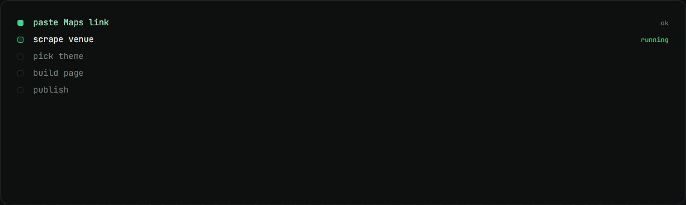
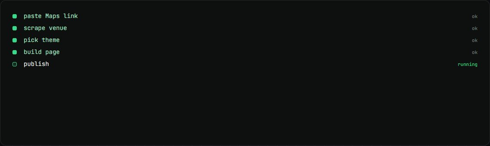

Venue site generator
A restaurant or bar website live before the sales call ends, from one Google Maps link.
my role Built it: 43 of 43 commits.
The problem
Showing a venue owner their own website during a sales call usually meant days of design work first.
How it works
- Paste the venue's Google Maps link; Apify scrapes the details.
- Edit the fields and pick a type, theme and font with a live preview.
- One click builds the page from a single JSON config.
- It publishes to a shared repo with its own subdomain.
What changed
- 9venue sites live
- 120 msto build a site
- 6themes
What I built
- The zero-dependency Node builder and template engine.
- Six themes, three font sets and three motion levels.
- The sign-in protected editor with a live preview.
Stack
- Node.js
- Apify
- Claude
- GSAP
- Vercel
- Railway
Stills

